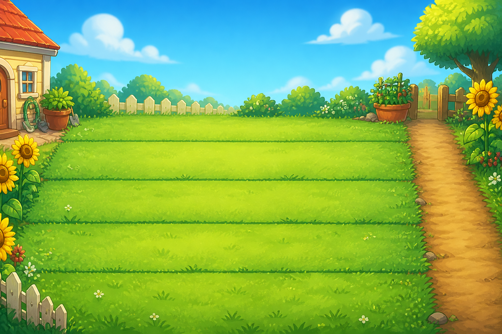
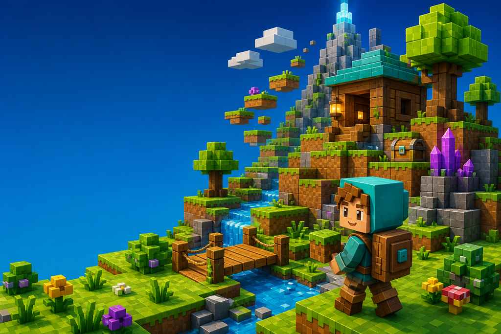
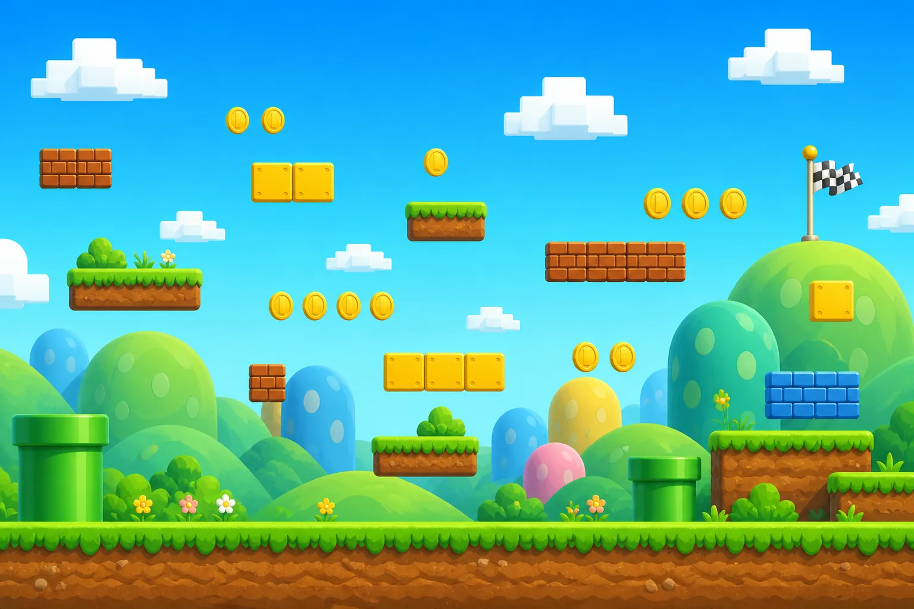

选择入口 / CHOOSE YOUR WORLD
先选一个
适合今天的工作台
先选一个幼儿游戏世界，再进入成人或少儿工作台。入口不同，任务和本地数据各自保持清楚。
幼儿游戏世界同一套幼儿任务数据 · 三种视觉主题01 — 03

PRESCHOOL / GARDEN DEFENSE植物僵尸工作台
完成学习收集阳光，选择植物卡片，守护五路草坪并收集徽章。
进入花园版 02 / VOXEL上次使用
PRESCHOOL / BLOCK ADVENTURE我的世界工作台
收集晶体、搭建基地、走过方块路线，把每项学习变成一块新地形。
进入方块版 03 / QUEST上次使用
PRESCHOOL / PLATFORM QUEST马里奥工作台
跳过平台、收集金币、抵达旗帜，把今日任务走成一条闯关路线。
进入闯关版成人与少儿工作台计划、学习与成长记录04 — 05
 ADULT / GROWTH
ADULT / GROWTH成人成长工作台
今日计划、生活分区、阅读记录、长期目标与每周复盘。
进入成人版 05 / LEARNING上次使用 CHILD / LEARNING
CHILD / LEARNING儿童学习工作台
语数英课程、错题本、阳光奖励、植物成长、独角兽和家长互动。
进入儿童版